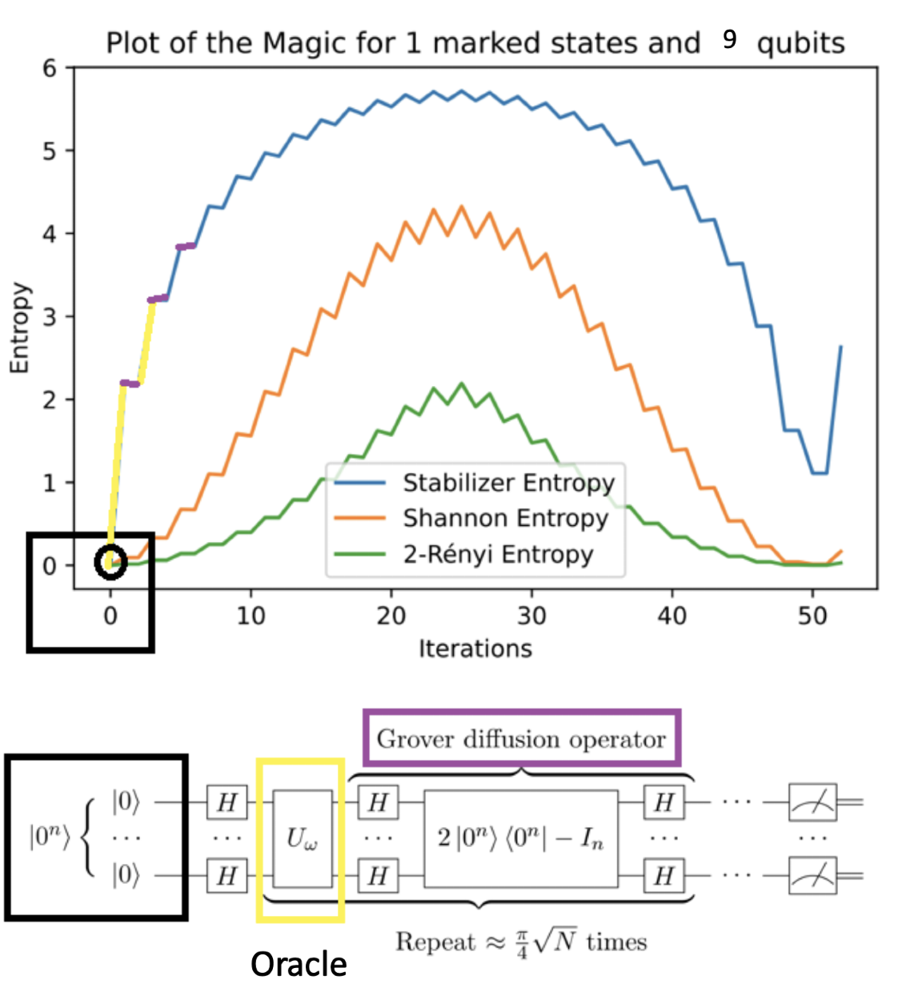

Quantum Information
What makes a quantum computation hard to simulate classically?
A computation is not classically hard simply because it is quantum. Some quantum circuits can generate superposition and entanglement and still be simulated efficiently on a classical computer. So what, exactly, pushes a quantum computation beyond that tractable regime?
This is the question that first drew me to quantum information. I am interested in identifying the resources that separate classically tractable quantum dynamics from computations that become difficult to reproduce classically, and in finding useful ways to quantify those resources.
The stabilizer boundary
The Gottesman–Knill theorem is a great starting point for these questions. Quantum circuits restricted to stabilizer states and Clifford operations can be simulated efficiently on a classical computer, even though they can display distinctly quantum features such as entanglement. This makes non-stabilizerness a natural place to look for the resources that allow a computation to move beyond this classically tractable regime.
Beyond stabilizers: magic
In the resource theory of stabilizer computation, departure from stabilizer structure is described by non-stabilizerness, often called magic. Magic is a necessary resource for universal quantum computation within this framework.
Its presence alone, however, does not guarantee a quantum advantage. Instead, it gives us a way to ask more quantitative questions: how much non-stabilizerness does a state contain? Where is it generated during an algorithm? And how does it relate to the difficulty of simulating that computation classically?
One approach is stabilizer Rényi entropy, which quantifies non-stabilizerness through the distribution of Pauli expectation values of a quantum state.
The difficulty is that a direct calculation requires summing over the full Pauli group: for an N-qubit state, there are 4N Pauli strings. A quantity designed to characterize complex quantum states therefore quickly becomes difficult to compute itself.
My research
I worked on this problem during my undergraduate research at Imperial College London with Soovin Lee in Professor Myungshik Kim’s group. My project focused on stabilizer entropies: how to estimate them efficiently, and what they can tell us about the way quantum resources evolve during a computation.
I studied an approach developed by Haug, Lee, and Kim that rewrites stabilizer entropies in a form that can be estimated using Bell measurements on multiple copies of a quantum state, avoiding the need to explicitly evaluate every Pauli string.
I then used Grover’s search algorithm and the quantum Fourier transform as concrete test cases, tracking how non-stabilizerness changes as the algorithms proceed. Rather than treating an algorithm as a black box, this lets us ask where a non-classical resource is actually generated and how it evolves from one computational step to the next.

The broader question
This project left me interested in a broader problem that continues to shape how I think about quantum computation: which features of a quantum system are actually responsible for making it difficult to reproduce classically?
I am particularly interested in carrying this perspective into quantum simulation and many-body physics—using tools from quantum information to understand when a quantum approach gives us something genuinely beyond the best classical description, and how we can tell.